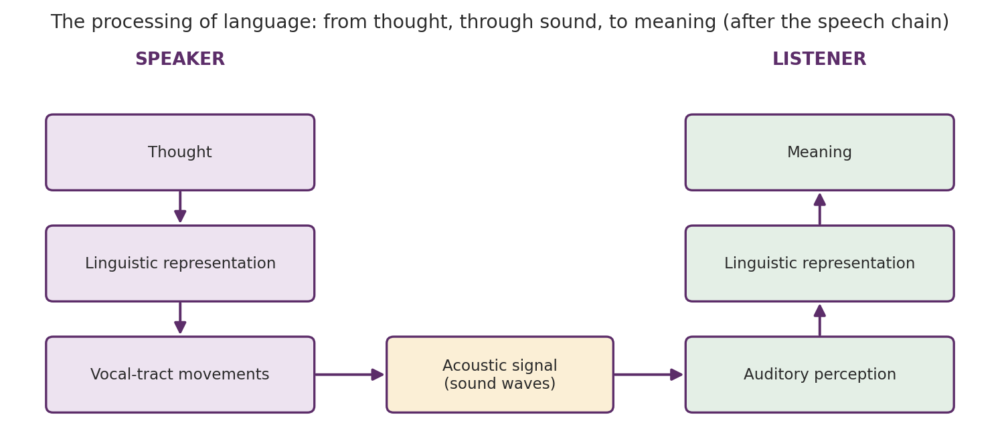
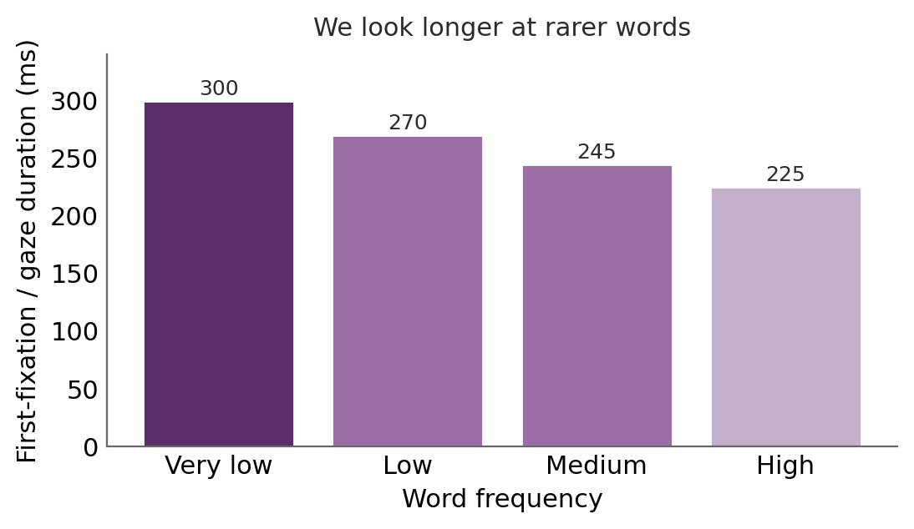
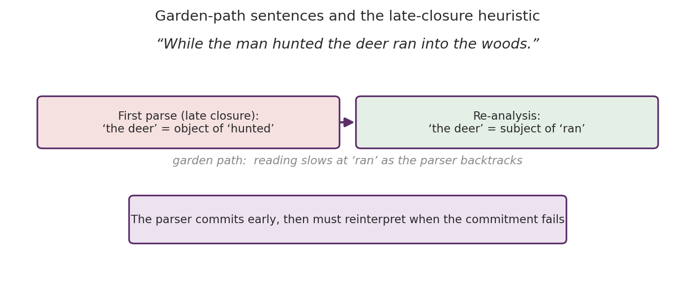
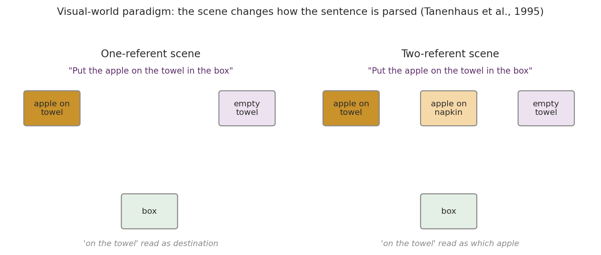
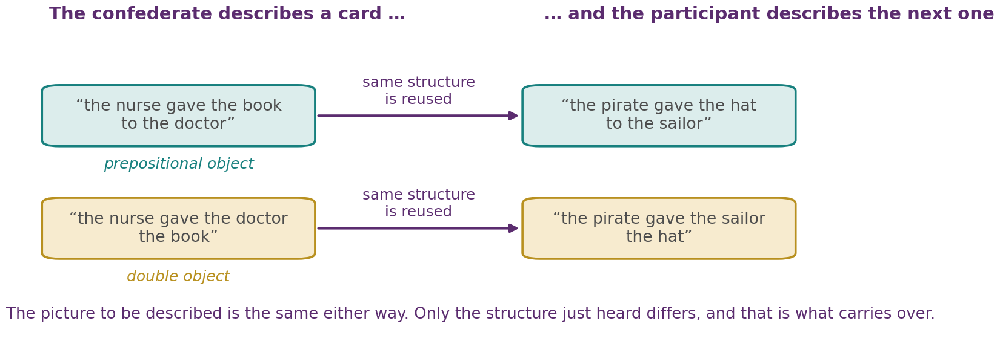
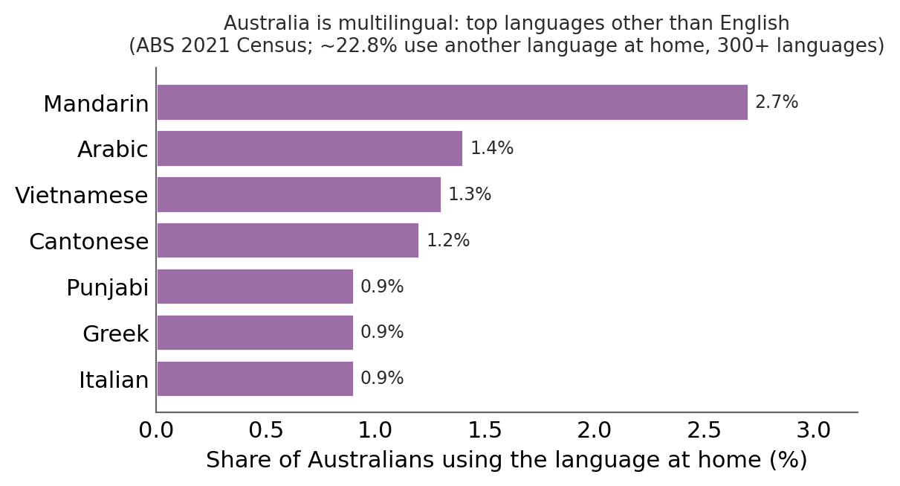

Chapter 9
Language
Where this chapter sits
Every chapter so far has studied one mind at a time. Attention selected, memory stored, concepts organised and imagery simulated, all inside a single head. Language is the capacity that lets the contents of one head reach another, which makes it both the most distinctively human of our abilities and the one that makes all the others shareable.
This chapter follows a single utterance from the thought in one mind to the meaning in another. We ask what makes human language special, then work up through words, sentences and whole stories, and then down the other side into how we produce language in conversation. The chapter closes with the situation most of the world actually lives in, which is more than one language at once.
Learning objectives
9.1 What makes human language special
Language is a system of communication that uses sounds or symbols to express feelings, thoughts, ideas and experiences. Three properties make the human version extraordinary. It is hierarchical: a small set of elements (sounds, then words) combines without limit into larger units (phrases, then sentences), so that a finite vocabulary yields an unbounded set of possible sentences. It is rule-governed: those combinations follow a grammar, so that “the cat chased the dog” means something different from “the dog chased the cat”, and “chased dog the cat the” means nothing at all. And it is arbitrary: apart from a few onomatopoeic cases, a word bears no resemblance to its referent. There is nothing dog-like about the sound “dog”; a community of speakers simply agrees on it.
Language is also strikingly universal. Every human culture has a fully expressive language. Deaf children not taught a sign language will invent one. Language emerges on a similar timetable across cultures. And while languages differ enormously in their words and sounds, each is unique, yet they share deep similarities: all have nouns and verbs, ways to negate, to question, and to mark time.
That universality framed the founding debate of the field. B. F. Skinner (1957), in Verbal Behavior, argued that language is learned like any other behaviour, through reinforcement. Noam Chomsky, first in Syntactic Structures (1957) and more pointedly in his review of Skinner's book (Chomsky, 1959), argued that the core of language is substantially innate. His argument was not from intuition but from two observations about children: they produce sentences they have never heard and that were never reinforced, and they acquire complex rules from input too impoverished to specify them.
It is worth being clear about what the debate settled and what it did not. Chomsky's critique was decisive against the strong reinforcement account, and it reoriented the discipline towards the mental machinery of language, the province of psycholinguistics, which studies how humans comprehend, produce, represent and acquire language. How much of that machinery is language-specific rather than general-purpose learning remains argued over, and statistical learning, which we meet in §9.3, has since shown that infants extract more structure from the input than was once assumed, although whether this reaches the grammatical knowledge at the heart of the poverty-of-the-stimulus argument is still debated.
9.2 The processing of language
A single act of communication is a chain (Denes & Pinson, 1993). In the speaker, a thought is cast into a linguistic representation, which drives the vocal tract to produce an acoustic signal. In the listener, that signal is picked up by audition, rebuilt into a linguistic representation, and finally recovered as meaning (Figure 9.1).

Framing language this way makes it an information-processing problem of the kind this unit has treated throughout: each step takes time, uses mental representations, and varies in efficiency with the amount and type of information. That in turn licenses a set of sharp questions that follow the chain. Why are some sounds meaningful and others not? How are words recognised, and how are they combined? How are ambiguous sentences resolved? How do we follow connected stories? The rest of the chapter answers these in order, working inward from sound to meaning and then back out to speech.
9.3 Understanding words
Your lexicon is the set of all the words you know. Semantics is meaning in general, and lexical semantics the meanings carried by individual words, each of which may have several.
Recognising a word is not a uniform process. The word-frequency effect is that we respond faster to common words than to rare ones; for example, people name pictured objects faster when their names are common (Wingfield, 1968), and eye-tracking during reading shows it directly: readers fixate low-frequency words for longer than high-frequency ones (Rayner & Duffy, 1986; see Figure 9.2).

Recognition must also cope with variable pronunciation. In running speech, “did you” surfaces as “did-joo” and “going to” as “gonna”, and listeners resolve them using context. Notice that this is the opposite of what a simple template-matching account would need: the signal is not a clean instance of a stored form, and understanding it requires knowledge brought to the signal rather than extracted from it.
Speech segmentation
A deeper puzzle is speech segmentation. The acoustic signal contains no reliable silences between words, yet we hear discrete words. Some of the solution is knowledge we already have: context, meaning, and knowledge of which sound sequences are legal in our language. But a remarkable part of it is statistical learning, tracking which sounds tend to follow which. Sounds that reliably co-occur get grouped as a word, and a dip in predictability signals a boundary.
Infants do this within minutes of exposure: eight-month-olds who heard just two minutes of a continuous stream of nonsense syllables could later tell its “words” apart from sequences that spanned a word boundary (Saffran et al., 1996). This matters for two reasons. It explains how a baby can begin to break into a language before knowing any of its words, since the statistics are available without the meanings. And, as §9.1 noted, it bears, if indirectly, on the poverty-of-the-stimulus argument: the input turns out to be richer than it looks, once you count the statistics in it.
Ambiguous words
Most common words are lexically ambiguous, carrying more than one meaning: a cast is a plaster support and also a group of actors. How do we settle on the right one? Tanenhaus and colleagues (1979) showed that for a moment we do not. On first encountering an ambiguous word, people briefly access all of its meanings, shown by the fact that the ambiguous word primes responses to words related to any of its senses. Only then does context prune away the irrelevant one.
Which meaning wins, and how fast, depends on meaning dominance. With biased dominance, one meaning is far more frequent than the others, and it is reached quickly unless context forces the rarer sense. With balanced dominance, two meanings are about equally frequent, and without context the reader is briefly slowed while the competition resolves. Meaning is therefore a race between frequency and context, which is why the same word can feel instant in one sentence and momentarily confusing in another.
9.4 Understanding sentences
A sentence is more than a string of words. Recovering its meaning requires syntax, the rules for combining words, and parsing, the mental grouping of words into phrases as they arrive. Parsing happens incrementally, word by word, which is efficient, because it means we do not wait for the end of a sentence to begin understanding it. It also occasionally leads us astray.
A garden-path sentence begins by appearing to mean one thing and ends meaning another. In “While the man hunted the deer ran into the woods”, we initially attach “the deer” as the object of “hunted”, then stall at “ran” and must reinterpret “the deer” as the subject of a new clause. This is a temporary ambiguity: the early words are ambiguous but the sentence is clear by its end, and the measurable slowdown at the disambiguating word is the cost of backtracking (Figure 9.3).

Two accounts of parsing
Why are we led up the garden path at all? The garden-path model holds that parsing is driven first by fast syntactic heuristics, notably late closure, the assumption that each new word belongs to the phrase currently being built. On that assumption “the deer” is bundled into the hunting clause. On this view grammar leads and meaning catches up afterwards.
The constraint-based approach argues instead that the parser draws on all available information at once, weighting syntax, word meaning, story context and memory load together. It also explains why some structures are reliably easier than others: subject-relative clauses (“The senator who spotted the reporter shouted”) are easier than object-relative ones (“The senator who the reporter spotted shouted”), partly because the latter place a heavier load on memory.
The most telling evidence comes from watching the eyes. In the visual-world paradigm, Tanenhaus and colleagues (1995) had people follow spoken instructions such as “Put the apple on the towel in the box” while looking at a real scene (Figure 9.4).

When the scene held a single apple, listeners briefly looked at an empty towel, having parsed “on the towel” as the destination. When it held two apples, they did not, having used the scene to parse “on the towel” as specifying which apple was meant. Non-linguistic context reached into parsing within a fraction of a second.
That timing is the whole argument. Nobody disputes that context eventually influences interpretation; the question is whether it arrives in time to guide the initial parse or only to repair it afterwards. A syntax-first model can accommodate late repair but not immediate guidance, and what the eyes show is immediate guidance. The modern position is closer to the constraint-based view, with syntactic heuristics understood as strong default weightings rather than a separate first stage.
9.5 Understanding text and stories
Beyond the sentence, comprehension requires building a connected whole. Coherence is the reader's representation of how the parts of a text relate to one another and to its overall topic, and we build it largely by inference, supplying information the text never states. Anaphoric inferences connect a pronoun to its referent. Instrument inferences fill in the likely means, so that “she swept the floor” implies a broom. Causal inferences link an event to its cause in an earlier sentence.
The end product is a situation model: a mental representation not of the words but of the state of affairs they describe, built from the protagonist's point of view and fleshed out with schemas. Readers represent the story almost as though experiencing the situation themselves, which is why it is the situation model, and not the sentences, that survives until the next day. You met the same principle in Chapter 6, where schemas filled in what was expected rather than what was presented; here that filling-in is doing useful work rather than causing error.
Whose schemas?
The useful work and the error, however, have the same source, because they are the same process. Because inference draws on the schemas a reader actually has, comprehension of the same text differs between readers with different background knowledge, and that difference falls along cultural lines.
Give readers a story that assumes knowledge they do not share and comprehension suffers, not through any deficit of language or intelligence, but because the inferences the text relies on are unavailable. Readers also import their own schemas, filling gaps with what would be normal in their world rather than in the story's. A reader from outside a story's culture may therefore recall it accurately in its words and still have built a different situation model.
This has a direct practical consequence, and it is worth stating before §9.7 returns to it. A comprehension test is always partly a test of shared background, so a reader's score reflects the fit between their schemas and the text's assumptions as much as their comprehension ability. Reading assessments built on culturally specific material will therefore underestimate readers whose knowledge lies elsewhere. That is a measurement problem rather than a fact about the readers.
9.6 Producing language: conversation
Conversation is language's natural habitat, and it is a feat of rapid coordination between two or more minds. Speakers observe the given–new contract, structuring sentences so that already-shared information provides the anchor for new information, which then becomes given in its turn. They build on common ground, the shared knowledge that lets much go unsaid. And they fall into entrainment, unconsciously synchronising their words, rhythms and constructions.
One powerful form of entrainment is syntactic priming, or syntactic coordination: producing a particular grammatical construction makes a conversation partner more likely to reuse it. Branigan and colleagues (2000) showed this with a confederate who described a card using one of two grammatical forms, after which the participant described a new card (Figure 9.5).

Participants tended to reuse whichever structure they had just heard, even though the picture to be described was different from the one the confederate had described. Reusing a structure reduces the computational load of talking: some of the work of planning a sentence has already been done. Fluent conversation also draws on theory of mind, tracking what a partner knows and intends, and on nonverbal signals such as gesture, facial expression and tone of voice, which carry much of the meaning.
Language in the brain
The physiology of language returns us to the localisation evidence of Chapter 1. Broca's area, in the left frontal lobe, supports fluent grammatical speech production; Wernicke's area, in the left temporal lobe, supports comprehension. Damage produces the double dissociation whose logic you now know well: Broca's aphasia leaves comprehension relatively intact, except for syntactically complex sentences, but speech laboured and agrammatical, while Wernicke's aphasia leaves speech fluent but empty and comprehension poor.
Two cautions keep this honest, and both matter clinically. The classical picture is a simplification: language depends on a distributed network including the connections between these regions, and real aphasias rarely fall neatly into two types. And the mapping to the left hemisphere, while typical, is not universal. What the dissociation establishes is that production and comprehension are separable, not that each lives in one place.
9.7 Bilingualism and language in society
Almost everything in this chapter so far has described a monolingual mind, which is a curious default given that most of the world is not monolingual. Australia is emphatically not. At the 2021 Census, 5.8 million people, or 22.8 per cent, used a language other than English at home, more than 300 languages were reported, and the most common languages other than English were Mandarin (2.7 per cent), Arabic (1.4), Vietnamese (1.3), Cantonese (1.2) and Punjabi (0.9) (Australian Bureau of Statistics, 2022a; Figure 9.6).

This is the ordinary condition of language rather than an exception to it, and it reshapes questions a monolingual psycholinguistics tends to set aside. It also matters professionally: anyone working in speech pathology, education or clinical psychology in Australia will spend much of their career working with speakers whose language profile is not the one the textbooks assume.
Indigenous languages and Aboriginal English
Before 1788 several hundred Indigenous languages were spoken across Australia. Today many are critically endangered. Of the 123 Indigenous languages still in use or being revitalised, only 12 traditional languages are still being learned by children as a first language (Department of Infrastructure, Transport, Regional Development and Communications, 2020), though revitalisation efforts are underway for many more. Early results from the fourth survey, released in 2026, count 177 languages spoken or used and 113 being revived, revitalised or reawakened, a rise that reflects much greater community participation in the survey as well as revitalisation itself (Australian Institute of Aboriginal and Torres Strait Islander Studies, 2026).
Census figures tell a similar story. In 2021, 76,978 Aboriginal and Torres Strait Islander people (9.5 per cent) reported using an Aboriginal or Torres Strait Islander language at home, down from 16.4 per cent in 1991 (although the number of speakers has risen, and the ABS attributes the falling proportion largely to growth in the number of people identifying as Aboriginal or Torres Strait Islander), and more than 150 such languages had at least one reported speaker (Australian Bureau of Statistics, 2022b). The Census and the language surveys classify and count languages differently, so their totals are not directly comparable. The two most commonly spoken were Yumplatok (Torres Strait Creole) and Kriol. Both are new contact languages that formed after 1788, when speakers of traditional languages came into contact with speakers of English. Census counts also show the measurement problem this section returns to. The question allows only one language per person, and the ABS itself notes that its data do not fully capture the multilingualism common in many communities. Only 1,371 people were recorded as speakers of Aboriginal English, a number that reflects how the question is asked more than how many people speak it.
Alongside these, Aboriginal English is a distinct and rule-governed variety of English, spoken by a large majority of Aboriginal Australians, which merges English with features of Indigenous languages and varies in its vocabulary and grammar across regions (Eades, 2013). The point that matters most here is a technical one with large consequences: Aboriginal English is a dialect, not an error. It has its own systematic grammar, and a speaker of it is following rules rather than failing to follow English ones.
The consequence is the measurement problem of §9.5 in its sharpest form. A standardised language assessment written for Standard Australian English can score a fluent Aboriginal English speaker as impaired, because the features that differ are counted as errors. Misreading dialect difference as language disorder is a documented and consequential mistake, and it leads to children being referred for clinical intervention they do not need while genuine difficulties go unnoticed. Knowing that a dialect is rule-governed is therefore not a point of etiquette; it is what protects against a diagnostic error.
Who counts as bilingual?
There is no clean line. Bilingualism is not a category people fall into but a set of dimensions along which they vary, and getting this straight early makes everything that follows easier to think about. Speakers differ in the age and context at which they acquired each language, in their proficiency in each, in how often and in which settings they use each one, in how similar their languages are to each other, in the relative social prestige of those languages, and in their emotional relationship to each.
Hold on to the implication. Any study that sorts people into “bilingual” and “monolingual” by a single question is collapsing all of that variation into a binary, and two studies doing so may be comparing quite different groups. That is not a minor methodological quibble; it is the single most useful thing to know when reading this literature, as the contested advantage debate below shows.
Becoming bilingual
Bilingualism can be simultaneous, acquiring two languages from the start, or sequential, adding a second language after a first is established (Kohnert, 2013). The distinction matters because the two routes face different problems: a simultaneous learner must sort two systems apart while building both, whereas a sequential learner already has one system in place, which can both help and interfere.
A long-standing question is how the two languages are organised. The unitary system hypothesis holds that a bilingual child begins with a single lexicon and grammar spanning both languages; the separate systems hypothesis holds that distinct systems are built for each from early on (Fromkin et al., 2018). The evidence now leans towards the separate systems view: bilingual toddlers show signs of differentiating their languages from early on, although the two systems interact and influence each other's development.
Fluent bilinguals also codeswitch, moving between languages between or within sentences. This was once read as confusion or incomplete mastery. It is now understood as a marker of competence: codeswitching is rule-governed, tends to occur at particular syntactic boundaries, and requires fluency in both languages to do well (Yow et al., 2018). The earlier interpretation is a good example of a deficit reading imposed on a competence, exactly as with Aboriginal English.
Does bilingualism change the mind?
Bilingualism has been claimed to confer a broad cognitive advantage, particularly in executive function. The reasoning is plausible: a bilingual speaker must continually select one language and suppress the other, and that ought to train inhibition, working memory and cognitive flexibility, which are precisely the abilities of Chapter 3.
The honest state of the evidence is that the advantage appears in some studies and fails to replicate in others, and that the effect, where present, is smaller than early reports suggested; meta-analyses that correct for publication bias find little or no overall advantage in either adults (Lehtonen et al., 2018) or children (Lowe et al., 2021). This is contested territory, and you should treat it as contested rather than established.
The most promising explanation for the inconsistency is the dimensional point made above. If bilingualism is a graded, changeable profile rather than a trait, then studies that recruit by a yes-or-no question will include very different people under the same label, and will disagree with each other for that reason alone. On this view the question “does bilingualism improve executive function?” is badly formed, and the better question is which aspects of bilingual experience, at which levels of proficiency and switching, are associated with which specific abilities.
One related finding is worth reporting carefully, because it is striking and easy to overstate. A meta-analysis of 25 studies, covering more than 780,000 students, of whom about 92,000 began a second language between the ages of 8 and 13 and the rest served as comparison groups, found that second-language learning is associated with better numeracy and mathematics skills (Nucette et al., 2025). The pooled association is sizeable, though it varies considerably between studies, and there is a mechanistic story available, since mathematics draws on the same executive abilities that language switching is thought to train. But it is an association drawn largely from observational data, and the obvious confound should be stated plainly: students who take up a second language are not a random sample of students. Whether the language learning causes the mathematics gain, or both reflect something else about the students and their schools, is not settled by the correlation.
Accent, language and social judgement
The language and even the accent we hear something in changes how we treat it, which connects language directly to the fluency effects of Chapter 6.
The foreign-language effect is that people make cooler, more utilitarian choices in moral dilemmas posed in a later-learned language than in their native tongue (Costa et al., 2014), apparently because the foreign language carries less emotional charge. Accent has its own effects: a foreign accent can lower the credibility listeners assign to a claim (Lev-Ari & Keysar, 2010), although the finding has a mixed replication record, with several attempts failing to reproduce it (e.g., Souza & Markman, 2013). Group cues shape children's trust early: four-year-olds accepted false testimony from a speaker who shared both their accent and their race but were sceptical of the same testimony from a speaker who shared neither, whereas three-year-olds believed both, and a match on accent or race alone was not enough (McDonald & Ma, 2016).
For the accent effect, the mechanism is the one Chapter 6 identified as driving the illusory-truth effect, and recognising it is what makes these findings more than a list. Foreign-accented speech is harder to process; harder processing feels like doubt; and the doubt gets attributed to the claim rather than to the accent. That diagnosis makes a prediction, and one study supports it: brief exposure to foreign-accented speech, which makes it easier to process, partly undoes the credibility penalty (Boduch-Grabka & Lev-Ari, 2021).
These are sobering findings, because the process involved is ordinary and invisible. Nobody decides to believe a claim less because of an accent. Processing fluency does the work, and the result is a bias along lines of language and origin, arising in listeners who would sincerely deny holding it. The practical implication is the same as in Chapter 6: because the effect operates below judgement, it is not reliably fixed by trying to be fair, and is better addressed by changing the conditions, through exposure, through structured assessment, and through not relying on impressions of credibility where a decision matters.
Chapter summary
Human language is hierarchical, rule-governed, arbitrary and universal. Chomsky's critique of Skinner was decisive against a pure reinforcement account and reoriented the field towards the mental machinery of language, though how much of that machinery is language-specific remains contested.
Word recognition shows the word-frequency effect (Wingfield, 1968; Rayner & Duffy, 1986) and must solve speech segmentation despite the absence of silences between words, partly through statistical learning, which infants perform within minutes and which bears on the poverty-of-the-stimulus argument.
Ambiguous words briefly activate all their meanings (Tanenhaus et al., 1979), with resolution governed by context and by meaning dominance, biased or balanced.
Sentences are parsed incrementally. The garden-path model attributes errors to fast syntactic heuristics such as late closure; the constraint-based approach holds that syntax, meaning and context combine immediately. The visual-world paradigm (Tanenhaus et al., 1995) shows non-linguistic context guiding the initial parse within a fraction of a second, which favours the constraint-based view.
Text comprehension builds coherence through anaphoric, instrument and causal inference, producing a situation model of the described events rather than of the words.
Because inference draws on the reader's own schemas, comprehension depends on shared background, so a comprehension test is partly a test of cultural knowledge.
Conversation is coordinated through the given–new contract, common ground, entrainment and syntactic priming (Branigan et al., 2000), and draws on theory of mind. Broca's and Wernicke's areas dissociate production from comprehension, though the classical two-area picture simplifies a distributed network.
Australia is highly multilingual: 22.8 per cent of people used a language other than English at home in 2021, across more than 300 languages (ABS, 2022a). Only 12 traditional Indigenous languages are still being learned by children as a first language (Department of Infrastructure, Transport, Regional Development and Communications, 2020).
Aboriginal English is a rule-governed dialect, not incorrect English (Eades, 2013). Assessing it against Standard Australian English norms produces a diagnostic error, scoring dialect features as impairment.
Bilingualism is not a category but a set of dimensions: age and context of acquisition, proficiency, patterns of use, similarity between languages, prestige and emotional relationship. Acquisition may be simultaneous or sequential, and codeswitching is a marker of competence rather than confusion (Yow et al., 2018).
The claimed bilingual executive-function advantage is genuinely contested, replicating inconsistently. The most promising explanation is that binary recruitment lumps together very different language profiles. An association between second-language learning and mathematics attainment is consistent (Nucette et al., 2025) but largely observational, with obvious selection confounds.
Language shapes judgement: a later-learned language makes moral choices more utilitarian (Costa et al., 2014), and four-year-olds are more credulous towards speakers who share both their accent and their race (McDonald & Ma, 2016). The accent-based credibility penalty follows from processing fluency rather than deliberate judgement, which is why brief exposure to an accent can reduce it (Boduch-Grabka & Lev-Ari, 2021).
Self-check questions
Explain what is meant by saying language is hierarchical, rule-governed and arbitrary, giving an example of each.
What observations about children's language did Chomsky use against Skinner, and what did he conclude? What did the debate not settle?
How does statistical learning in infants bear on the poverty-of-the-stimulus argument?
What is the word-frequency effect, and how do eye-movement data demonstrate it?
Why is variable pronunciation a problem for any account of word recognition based on matching the signal to a stored template?
On first meeting an ambiguous word, do we access one meaning or several? Cite the evidence, and explain the role of meaning dominance.
Explain why “While the man hunted the deer ran into the woods” is a garden-path sentence, and what late closure contributes to the explanation.
How did Tanenhaus and colleagues (1995) use the visual world to distinguish the garden-path model from the constraint-based approach? Why is the timing of the context effect, rather than its existence, what settles the question?
What is a situation model, and why is it, rather than the exact sentences, what we tend to remember?
Explain why two readers with different cultural backgrounds can build different situation models from the same text without either misreading it.
Explain syntactic priming, and why the fact that the second picture is different from the first matters to the interpretation.
State the double dissociation between Broca's and Wernicke's aphasia, and give two reasons the classical two-area picture is a simplification.
Why is it a consequential error, rather than merely a discourtesy, to treat Aboriginal English as incorrect English? Set out the clinical consequence.
Name four dimensions along which bilingual speakers differ, and explain why a study recruiting by a single yes-or-no question may reach a different conclusion from another doing the same.
Distinguish simultaneous from sequential bilingual acquisition, and say what different problem each route faces.
Why was codeswitching once read as confusion, and what is the evidence that it is instead a marker of competence? What does it have in common with the Aboriginal English case?
The bilingual executive-function advantage replicates inconsistently. Give the most promising explanation for the inconsistency, and explain why a larger sample would not resolve it.
A meta-analysis finds that second-language learners achieve better mathematics results. Give one mechanistic explanation and one confound, and say what evidence would distinguish them.
Explain, using processing fluency, why a foreign accent can reduce the credibility of a claim, and why brief exposure to the accent reduces that effect. What does this imply about how to counter the bias?
Model answers to these questions are in the answers companion, Chapter 9. Try each question yourself before you look.
Attribution and licence
This chapter is licensed under a Creative Commons Attribution-NonCommercial-ShareAlike 4.0 International (CC BY-NC-SA 4.0) licence. It adapts and remixes the sources below; changes were made, including restructuring into the unit's teaching scaffold, rewriting for voice and level, adding the critical evaluation of the parsing and bilingual-advantage debates, writing §9.7 in full, and adding original figures.
Graham and Griffin (2025), Cognitive Psychology, Chapter 6 (speech perception; parsing; language and the brain) (Central New Mexico Community College). CC BY-NC-SA 4.0. Base source for the psycholinguistics core, §§9.1 to 9.6.
Stangor and Walinga (2014), Introduction to Psychology – 1st Canadian Edition (BCcampus). CC BY-NC-SA 4.0. Supplement for language comprehension and production.
Australian Bureau of Statistics (2022a, 2022b), Cultural diversity of Australia; Language statistics for Aboriginal and Torres Strait Islander peoples, 2021. Public data, used for the language statistics and Figure 9.6 in §9.7.
Boduch-Grabka and Lev-Ari (2021), Cognitive Science. Open access. Adapted for the accent and credibility material in §9.7.
Nucette, Hamamura, Leitao and Biedermann (2025), Bilingualism: Language and Cognition. Open access. Source for the language and mathematics association in §9.7.
All other studies cited in this chapter are described from standard knowledge in the author's own wording, with no source text adapted.
Full bibliographic details for every work cited in this chapter, including the sources named above, are given in the References below.
References
Australian Bureau of Statistics. (2022a). Cultural diversity of Australia. https://www.abs.gov.au/articles/cultural-diversity-australia
Australian Bureau of Statistics. (2022b). Language statistics for Aboriginal and Torres Strait Islander peoples, 2021. https://www.abs.gov.au/statistics/people/aboriginal-and-torres-strait-islander-peoples/language-statistics-aboriginal-and-torres-strait-islander-peoples/2021
Australian Institute of Aboriginal and Torres Strait Islander Studies. (2026). National Indigenous Languages Surveys. https://aiatsis.gov.au/research/languages/national-indigenous-languages-surveys
Boduch-Grabka, K., & Lev-Ari, S. (2021). Exposing individuals to foreign accent increases their trust in what nonnative speakers say. Cognitive Science, 45(11), Article e13064. https://doi.org/10.1111/cogs.13064
Branigan, H. P., Pickering, M. J., & Cleland, A. A. (2000). Syntactic co-ordination in dialogue. Cognition, 75(2), B13–B25. https://doi.org/10.1016/S0010-0277(99)00081-5
Chomsky, N. (1957). Syntactic structures. Mouton.
Chomsky, N. (1959). A review of B. F. Skinner's Verbal behavior. Language, 35(1), 26–58. https://doi.org/10.2307/411334
Costa, A., Foucart, A., Hayakawa, S., Aparici, M., Apesteguia, J., Heafner, J., & Keysar, B. (2014). Your morals depend on language. PLOS ONE, 9(4), Article e94842. https://doi.org/10.1371/journal.pone.0094842
Denes, P. B., & Pinson, E. N. (1993). The speech chain: The physics and biology of spoken language (2nd ed.). W. H. Freeman.
Department of Infrastructure, Transport, Regional Development and Communications. (2020). National Indigenous languages report. Commonwealth of Australia. https://www.arts.gov.au/what-we-do/indigenous-arts-and-languages/indigenous-languages-and-arts-program/national-indigenous-languages-report
Eades, D. (2013). Aboriginal ways of using English. Aboriginal Studies Press.
Fromkin, V., Rodman, R., & Hyams, N. (2018). An introduction to language (11th ed.). Cengage.
Graham, R., & Griffin, S. (2025). Cognitive psychology. Central New Mexico Community College. https://nmoer.pressbooks.pub/cognitivepsychology/
Kohnert, K. (2013). Language disorders in bilingual children and adults (2nd ed.). Plural Publishing.
Lehtonen, M., Soveri, A., Laine, A., Järvenpää, J., de Bruin, A., & Antfolk, J. (2018). Is bilingualism associated with enhanced executive functioning in adults? A meta-analytic review. Psychological Bulletin, 144(4), 394–425. https://doi.org/10.1037/bul0000142
Lev-Ari, S., & Keysar, B. (2010). Why don't we believe non-native speakers? The influence of accent on credibility. Journal of Experimental Social Psychology, 46(6), 1093–1096. https://doi.org/10.1016/j.jesp.2010.05.025
Lowe, C. J., Cho, I., Goldsmith, S. F., & Morton, J. B. (2021). The bilingual advantage in children's executive functioning is not related to language status: A meta-analytic review. Psychological Science, 32(7), 1115–1146. https://doi.org/10.1177/0956797621993108
McDonald, K. P., & Ma, L. (2016). Preschoolers' credulity toward misinformation from ingroup versus outgroup speakers. Journal of Experimental Child Psychology, 148, 87–100. https://doi.org/10.1016/j.jecp.2016.03.011
Nucette, A., Hamamura, T., Leitao, S., & Biedermann, B. (2025). Can learning a new language make you better at maths? A meta-analysis of foreign language learning and numeracy skills during early adolescence. Bilingualism: Language and Cognition, 28(4), 923–953. https://doi.org/10.1017/S1366728924000701
Rayner, K., & Duffy, S. A. (1986). Lexical complexity and fixation times in reading: Effects of word frequency, verb complexity, and lexical ambiguity. Memory & Cognition, 14(3), 191–201. https://doi.org/10.3758/BF03197692
Saffran, J. R., Aslin, R. N., & Newport, E. L. (1996). Statistical learning by 8-month-old infants. Science, 274(5294), 1926–1928. https://doi.org/10.1126/science.274.5294.1926
Skinner, B. F. (1957). Verbal behavior. Appleton-Century-Crofts.
Souza, A. L., & Markman, A. B. (2013). Foreign accent does not influence cognitive judgments. In Proceedings of the 35th Annual Meeting of the Cognitive Science Society (pp. 1360–1365). Cognitive Science Society. https://escholarship.org/uc/item/8hd9v4ff
Stangor, C., & Walinga, J. (2014). Introduction to psychology – 1st Canadian edition. BCcampus. https://opentextbc.ca/introductiontopsychology/
Tanenhaus, M. K., Leiman, J. M., & Seidenberg, M. S. (1979). Evidence for multiple stages in the processing of ambiguous words in syntactic contexts. Journal of Verbal Learning and Verbal Behavior, 18(4), 427–440. https://doi.org/10.1016/S0022-5371(79)90237-8
Tanenhaus, M. K., Spivey-Knowlton, M. J., Eberhard, K. M., & Sedivy, J. C. (1995). Integration of visual and linguistic information in spoken language comprehension. Science, 268(5217), 1632–1634. https://doi.org/10.1126/science.7777863
Wingfield, A. (1968). Effects of frequency on identification and naming of objects. The American Journal of Psychology, 81(2), 226–234.
Yow, W. Q., Tan, J. S. H., & Flynn, S. (2018). Code-switching as a marker of linguistic competence in bilingual children. Bilingualism: Language and Cognition, 21(5), 1075–1090. https://doi.org/10.1017/S1366728917000335